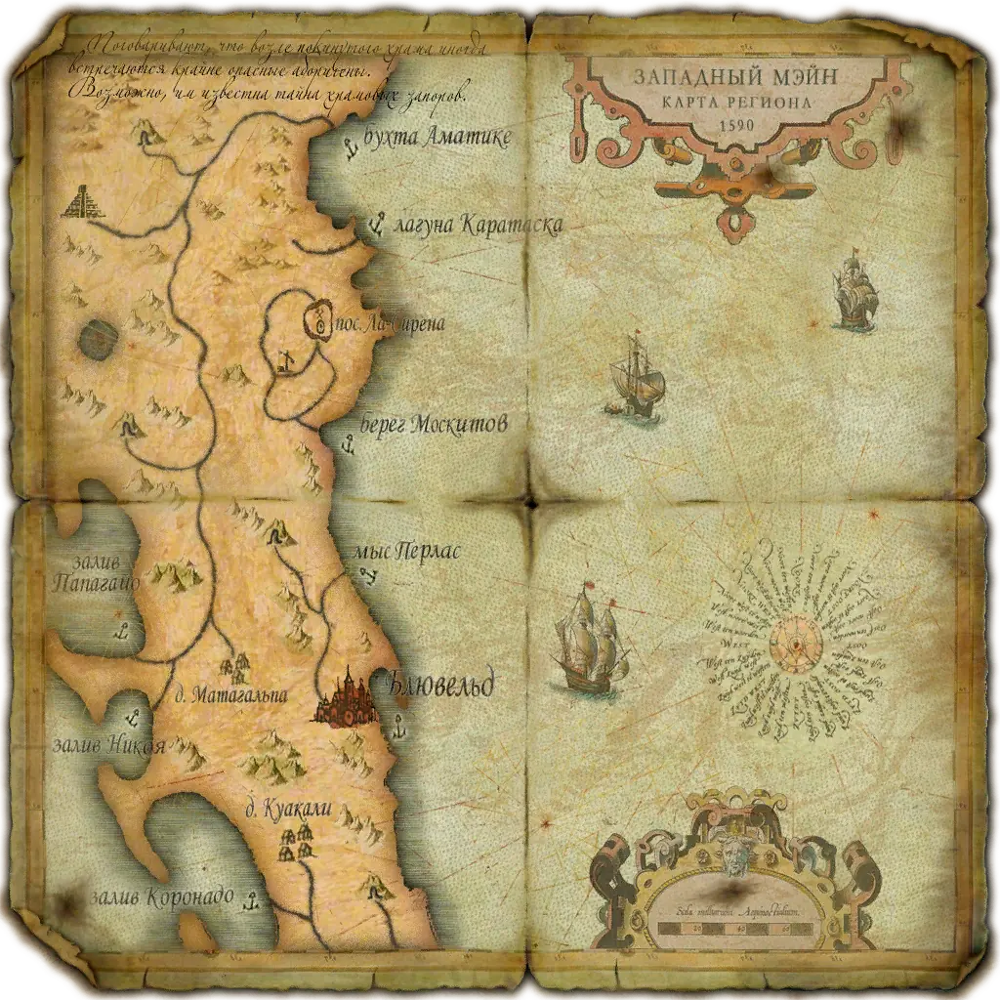
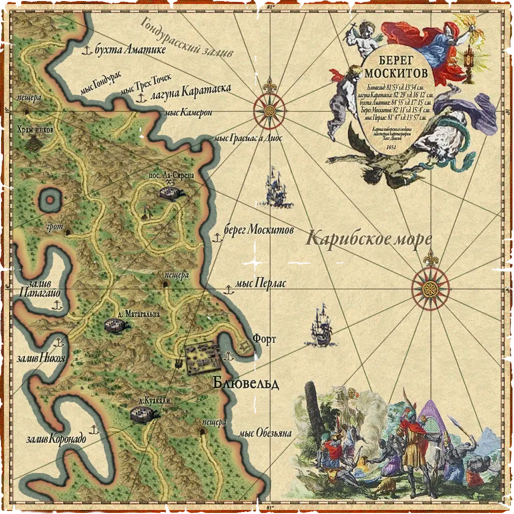
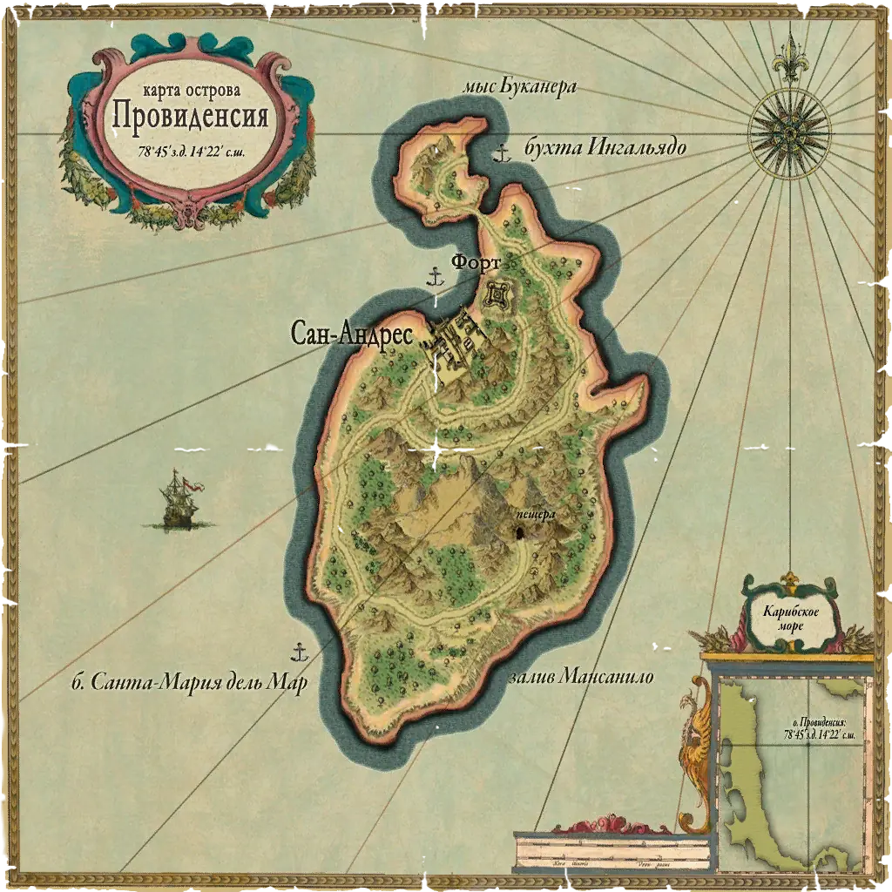
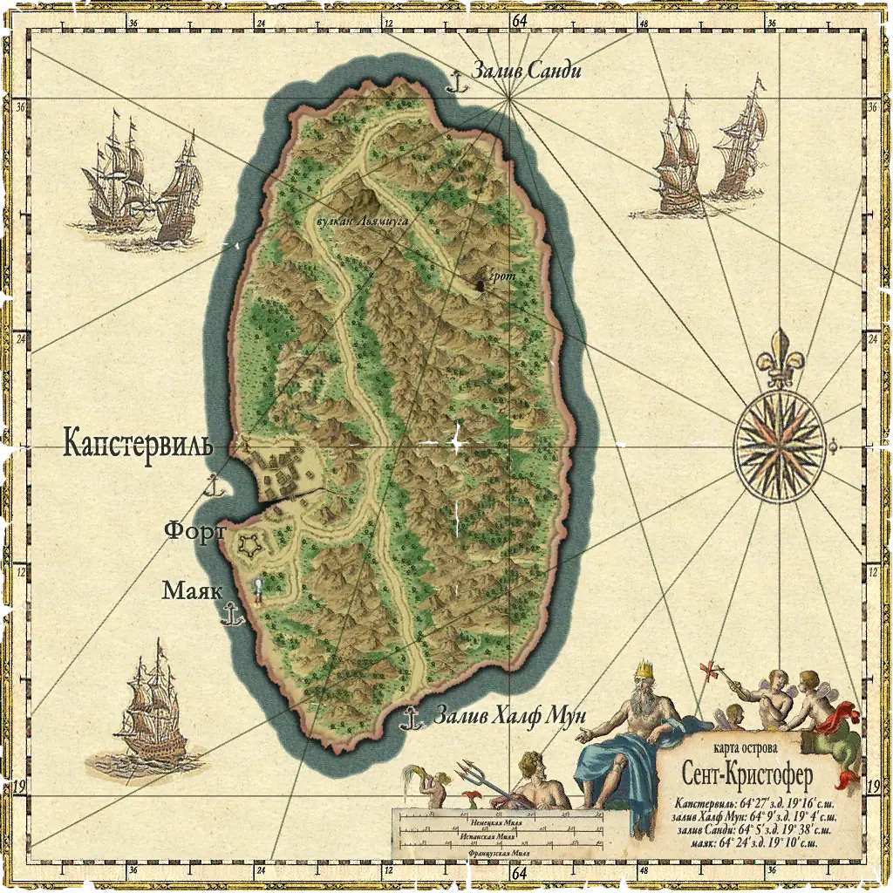

Мэйн
Блювельд
← города и островаГорода
В скриптах: SantaCatalina
Точки входа
5
Локации
порт: Блювельд (`SantaCatalina_town`)форт `fort_SantaCatalina`Берег Москитов (`Shore53`)мыс Перлас (`Shore54`)залив Сан Хуан дель Норте (`Shore55`)
Гроты и подземелья
| Название | Вход | Содержимое | Опасности |
|---|---|---|---|
| Pearl_Grot | Pearl_Jungle_03 → Pearl_GrotEntrance → грот; тупик | box1 | grotto1 |
| SantaCatalina_Cave | SantaCatalina_Jungle_01 → CaveEntrance → пещера → **SantaCatalina_ExitTown** (сквозная, срезка к городу) | box1..box3 | cavernMedium2 |
| SantaCatalina_Grot | SantaCatalina_jungle_04 → GrotEntrance → грот; тупик | box1 | grotto2, скелетов нет |
| SantaCatalina_PearlCave | SantaCatalina_jungle_03 → PearlCaveEntrance → пещера → **Pearl_CaveEntrance** (переход на «остров» Пёрл) | box1..box3 | cavernMedium1; единственный подземный переход между двумя разными «островами» скриптов |
| Tenotchitlan_Cave | Tenotchitlan_Jungle_03 → CaveEntrance → пещера | box1..box3 (в описаниях форума — «три сундука») | cavernMedium1 |
| Mine_mines | кольцо джунглей Mine_01 ⇄ Mine_04 ⇄ Mine_02 ⇄ Mine_03; Mine_02 ⇄ Mine_exit ⇄ Mine → забой | — | тип mine, энкаунтеров нет |
Карты




- Точек входа с моря: 5 (`islands_init.c:2037`).
- Участок Мэйна с городом Блювельд (`SantaCatalina_town` = Блювельд).
- `SantaCatalina_PearlCave` — единственный подземный переход между двумя разными «островами» скриптов: Санта-Каталина ⇄ Пёрл (Жемчужный Берег).